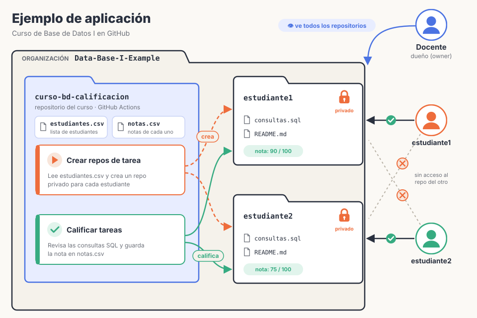

Cómo guardar la historia de tu trabajo y colaborar con otros, sin saber programar.
1 Git toma «fotos» de tu proyecto: se llaman commits
SIN GIT
tesis_v2.docxtesis_FINAL.docxfinal_FINAL(2).docx
¿Cuál es la buena? ¿Qué cambió? ¿Quién?
CON GIT🎮 como «guardar partida»
foto 1
Índice listoAna · lun
foto 2
Cap. 1Ana · lun
foto 3
GráficosLuis · mar
foto 4
CitasAna · mié
foto 5
Para revisarLuis · jue
¿salió mal? vuelves a cualquier foto anterior
2 Cómo se toma una foto: elegir y luego disparar
Tu carpeta
donde trabajas
borrador
git add→ elegir
Preparado
lo que entra en la foto
el borrador queda afuera
git commit→ tomar la foto
Historial
fotos guardadas
Gráficos hoy
Cap. 1 ayer
Índice lunes
3 Ramas: experimentar sin miedo
4 Git y GitHub no son lo mismo
Git
programa en tu compu
≠
GitHub
sitio web para compartir
Git es la cámara · GitHub es el álbum en línea
5 Trabajar en equipo
6 Pull Request: proponer un cambio
1Creas una rama
2Haces cambios
3Pides que se sume
4El equipo revisa
5Se une a main
Ej.: Luis corrige la bibliografía en su rama y pide sumarla. Ana comenta «falta una cita», Luis la agrega, Ana aprueba ✓ y el cambio entra a la versión principal.
Vocabulario rápido
Repositorio
· carpeta + toda su historia
Commit
· una foto guardada
Rama
· línea de trabajo paralela
Merge
· unir una rama con otra
Push / Pull
· subir / bajar de GitHub
Clone
· copiar el repo a tu compu
Fork
· tu copia del proyecto de otro
Pull Request
· pedir que sumen tus cambios
GitHub Pages
· publicar una web gratis

Para empezar sin comandos: ① cuenta en github.com → ② instala GitHub Desktop → ③ crea tu primer repositorio